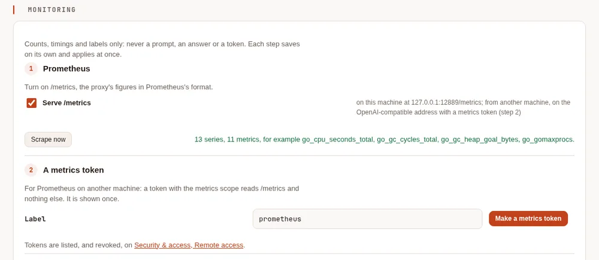
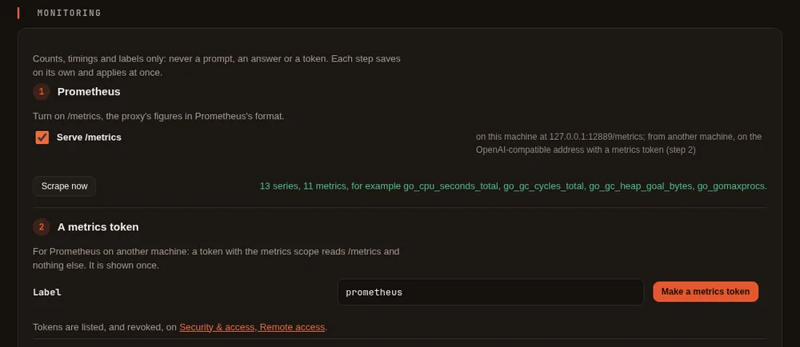

Metrics and telemetry export #
On this page
The proxy can hand what it already knows about each request (counts, timings, tokens, health, budgets) to the
monitoring and security tools you run: a Prometheus /metrics endpoint, an OpenTelemetry (OTLP) export of traces,
metrics and logs, and the audit events as JSON lines for a SIEM. All of it is off by default; on one machine
nothing changes until you turn something on.
It is metadata only. No prompt, answer, file, tool argument, key or token is ever exported, and no error text either:
a failure is exported as its fixed class (rate limited, server error), never as what the provider said.
In plain words #
If you already run Prometheus, Grafana, an OpenTelemetry collector or a security tool (a SIEM), the proxy can feed them: how many requests, how fast, how many tokens and AI units, which providers are healthy, how much of each budget is used. You then watch Maple in the same place as everything else, and get its alerts there.
Everything is on the setup page's Monitoring tab, in the Configure group. The tab appears once something on it is set up; before that, open Set up more and choose Monitoring and alert webhooks. The tab is a short list of steps. Each step saves on its own and applies at once, without a restart:
- Prometheus. Turn on Serve /metrics. Scrape now reads the page's own
/metricsand says how many series and metrics it found, with a few of their names, so you know it works before Prometheus is set up. - A metrics token. For Prometheus on another machine. Give it a label (
prometheusby default) and press Make a metrics token. The token can read/metricsand nothing else. It is shown once, with a copy button: copy it then. Tokens are listed, and revoked, on Security & access, under Remote access. - Scrape it. Three snippets to copy: a Prometheus
scrape_configsentry that reads the token from a file (credentials_file), a Kubernetes Secret with aServiceMonitorfor the Prometheus Operator, and acurlline to try it. The token in them is always a placeholder: put yours where it says. If the proxy listens on this machine only, Prometheus on this machine scrapes the page's address without a token; for Prometheus on another machine, share the proxy first (People & teams), then scrape the OpenAI-compatible address with the metrics token. - Per person and team. Off by default. On, the metrics count requests per person and per team. That means more series to store, and your metrics then name the people using the proxy, for whoever can read them.
- OpenTelemetry. Type the collector's address, pick the protocol (gRPC or HTTP/protobuf) and press
Turn on (later Save, or Turn off). Choose what to send with the Traces, Metrics and Logs
switches, and how the collector names this proxy (Service name; empty means
maple-proxy). Add a header, such as the collector's API key, by typing its name and value once (below). Then Send a test export to check that the collector takes it. - Audit lines. Turn on Write audit events to standard output to hand tokens made or revoked, refused requests, settings written and sign-ins to a security tool as JSON lines.
- Alerts. The alert rules and the webhooks (Slack, Microsoft Teams or any address) are here too. See Alerts and forecasts.


![The Monitoring tab, step 5, OpenTelemetry (OTLP): the collector address http://127.0.0.1:12646 over HTTP/protobuf, with Save and Turn off; Traces and Metrics on, Logs off; the Service name empty, so maple-proxy; one header, Authorization, set, in the secret store, with Remove; Plain http on a trusted network off. Below, the result of Send a test export: the collector took the test export, sent to http://127.0.0.1:12646 with the header authorization (values not shown), what was sent, and traces accepted and logs accepted.](../img/docs/monitoring-otel-light.webp)
![The Monitoring tab, step 5, OpenTelemetry (OTLP): the collector address http://127.0.0.1:12646 over HTTP/protobuf, with Save and Turn off; Traces and Metrics on, Logs off; the Service name empty, so maple-proxy; one header, Authorization, set, in the secret store, with Remove; Plain http on a trusted network off. Below, the result of Send a test export: the collector took the test export, sent to http://127.0.0.1:12646 with the header authorization (values not shown), what was sent, and traces accepted and logs accepted.](../img/docs/monitoring-otel-dark.webp)
Headers on the page #
A header's value (an API key, a Bearer token) is typed once and goes straight to the secret store, in the slot
otel/<name> (the name in lower case); config.yaml gets the reference ${secret:otel/<name>}, never the value. The
page then shows each header by name only, with where its value comes from:
| The page says | Meaning |
|---|---|
| set, in the secret store | the page stored it (or maple-proxy secrets set otel/<name> did) |
| not set yet | config.yaml names a secret that holds nothing yet |
| from the environment | a ${env:...} reference, with the variable's name |
| written in config.yaml | a plain value in the file, which only a header without a credential may be |
Remove deletes the header from config.yaml, and the value the page stored from the secret store. A header name is
letters, digits, -, . and _ only. If you change the collector's address while headers are set, the page asks
first, since the headers then go to the new address.
Plain http on a trusted network is otel.insecure_http. Without it, headers are never sent over plain http://
to another machine: such an export is refused. localhost and a loopback IP address count as this machine; a host
name that merely starts with 127. does not. Turning it on asks you to confirm, and the page then warns that headers
can cross the network in clear text. Prefer https://.
Send a test export #
Send a test export sends one span and one log record, both named maple.test, with the headers you set, to the
collector as saved. Nothing in them comes from a request, prompt or answer. The page then shows where they went (the
scheme and host for each signal), the protocol, the names of the headers sent (never their values), what was sent,
and for traces and logs whether the collector accepted it, how long it took, and a short reason if not: an HTTP
status, a gRPC code, or a network failure, never what the collector said.
- One test every 10 seconds at most.
- Link-local and cloud-metadata addresses are refused, after the name is resolved; redirects are never followed.
- Only on the setup page on the proxy's own machine: through single sign-on the test and the header changes are refused.
When the proxy's settings come from files managed elsewhere (a Kubernetes ConfigMap), the tab shows the state and refuses every change: change the files instead.
Set it in config.yaml #
The page writes these keys; you can also write them yourself. Every key is in Proxy settings.
metrics:
prometheus: on # serve /metrics
per_person: off # on: also count requests per person and team (see below)
otel:
endpoint: https://collector.example.com:4317 # setting it turns the OTLP export on
protocol: grpc # grpc or http (HTTP/protobuf)
headers:
authorization: ${secret:otel/authorization} # credentials as references, never written here
traces: on # one span per request
metrics: on # the same figures as /metrics
logs: off # on: the proxy's own log lines too
service_name: "" # empty: maple-proxy (or OTEL_SERVICE_NAME)
insecure_http: off # on: headers may go over plain http:// to another machine
log:
audit_lines: off # on: audit events as JSON lines on standard outputA header that carries a credential (authorization, anything with token, key or secret in its name) must be a
${secret:...} or ${env:...} reference: set it on the page, or store it with maple-proxy secrets set
otel/authorization (the value on standard input). The proxy refuses a credential written into the file.
A reference may only name an otel/ secret (${secret:otel/...}), an OTEL_ environment variable or a MAPLE_
one, and never a variable that holds another credential: MAPLE_SECRET_* (except MAPLE_SECRET_OTEL_*),
MAPLE_STORAGE_KEY, MAPLE_POSTGRES_DSN, MAPLE_REDIS_URL and MAPLE_WEBHOOK_*. A configuration that names one is
refused, so a provider key cannot be sent to a collector by mistake.
Prometheus #
Where to scrape #
| From | Address | Token |
|---|---|---|
| This machine | http://127.0.0.1:11539/metrics (the setup page's address) | none; with a setup-page password, a token with the metrics scope |
| Another machine, a container, Kubernetes | the OpenAI-compatible address, /metrics | a token with the metrics scope |
Make a token on the Monitoring tab (step 2), under Security & access, Remote access (A metrics collector to read
/metrics), or with maple-proxy metrics token prometheus (shown once). The metrics scope reads /metrics and
nothing else: it cannot use the models, and no token made before Maple 2.1 has it, whatever its scopes. In a
container, mount the tokens as the secret access.metrics_tokens (one label=token a line), like the proxy tokens.
Revoke a token on the setup page, under Security & access, Remote access. Each token may scrape about once a second (a burst of
five); a 30-second scrape interval is plenty.
# prometheus.yml
scrape_configs:
- job_name: maple-proxy
metrics_path: /metrics
authorization:
credentials_file: /etc/prometheus/maple-metrics-token
static_configs:
- targets: ["maple-host.example.com:11535"]What is exported #
| Metric | Type | Labels |
|---|---|---|
maple_requests_total | counter | provider, model, outcome (ok, error, canceled, cached), error_class, auto_weight |
maple_request_duration_seconds | histogram | provider, model, outcome |
maple_time_to_first_token_seconds | histogram | provider, model (streamed answers) |
maple_tokens_total | counter | provider, model, direction (input, output, cached, cache_write) |
maple_ai_units_total | counter | provider, model: AI units as the provider stated them (measured) |
maple_estimated_cost_usd_total | counter | provider, model: list-price cost, for providers set up to estimate it (estimated); for xAI, the price xAI stated for each call |
maple_cache_requests_total | counter | provider, model, result (hit, partial, miss, lost, n/a, response_cache) |
maple_provider_health | gauge | provider, model, state: 1 for the current health state |
maple_budget_used, maple_budget_limit | gauge | provider, unit (requests, ai_units): today's budgets, UTC day |
maple_budget_used_usd_estimated, maple_budget_limit_usd | gauge | provider: each account's monthly dollar budget, estimated dollars used this budget month and the limit |
maple_alerts_firing | gauge | rule, level: alerts in force |
maple_alerts_firing_by_subject | gauge | rule, level, scope (provider, person, team, all), subject: the same alerts, with whose they are (below) |
maple_person_budget_used_ai_units, maple_person_budget_limit_ai_units | gauge | person, period (day, month): each person's budget in AI units, UTC day and month; only with metrics.per_person |
maple_team_budget_used_ai_units, maple_team_budget_limit_ai_units | gauge | team, period (day, month): each team's budget, the same way; only with metrics.per_person |
maple_person_budget_used_usd_estimated, maple_person_budget_limit_usd, maple_team_budget_used_usd_estimated, maple_team_budget_limit_usd | gauge | person or team, period (day, month): people's and teams' dollar caps, estimated, UTC day and month; only with metrics.per_person |
maple_requests_in_flight | gauge | requests being answered now, streams included |
maple_build_info | gauge | version |
go_goroutines, go_memory_total_bytes, go_heap_objects_bytes, go_gc_heap_goal_bytes, go_gc_cycles_total, go_cpu_seconds_total, go_gomaxprocs, process_start_time_seconds | the process |
maple_tokens_total{direction="input"} includes the cached tokens; cached is the part read from the provider's
cache. Counters start at zero when the proxy starts.
maple_alerts_firing_by_subject names the provider a provider budget or quota alert is about, and all for the
spend and error-rate alerts. For a person's or a team's budget it says subject="person" or subject="team", and
the person or team itself only with metrics.per_person: on. Each value counts the alerts in force, so a person whose
daily and monthly budgets are both spent counts 2. maple_alerts_firing is unchanged.
A person or team budget series appears for each period that has a limit (a person with only a monthly budget has no
period="day" series). The used figure is what the budget check counts, and a request is refused once it reaches
the limit.
Labels stay bounded #
Every label has a fixed set of values or a cap on how many it keeps (a model name past the cap is counted as
other), so a client sending a new model name with every request cannot grow your Prometheus without end. There is no
session, conversation, token or person label.
metrics.per_person: on adds person and team to maple_requests_total and maple_ai_units_total, and to spans,
turns on the person and team budget gauges, and lets an alert's subject name the person or team. People past the
person cap (500) and teams past the team cap (100) are added up under other, used and limit both.
It is a choice with two costs: more series (one per person per provider and model), and your metrics then name the
people using the proxy, for whoever can read them. Leave it off unless you need per-person figures in your
monitoring; the setup page's People & teams tab and maple-proxy usage already have them.
Several replicas #
Each pod serves its own /metrics, counting what it answered. Scrape every pod and add them up in Prometheus
(sum by (provider, model) (rate(maple_requests_total[5m]))). Gauges such as maple_budget_used are each pod's own
view. For the Prometheus Operator, the Kubernetes samples have a component, config/metrics, with a
ServiceMonitor that sends a metrics token (see Kubernetes).
Grafana #
Some starting points:
- requests a second by outcome:
sum by (outcome) (rate(maple_requests_total[5m])) - error ratio by provider:
sum by (provider) (rate(maple_requests_total{outcome="error"}[5m])) / sum by (provider) (rate(maple_requests_total[5m])) - 95th-percentile latency:
histogram_quantile(0.95, sum by (le, model) (rate(maple_request_duration_seconds_bucket[5m]))) - time to first token: the same with
maple_time_to_first_token_seconds_bucket - cache reads:
sum(rate(maple_tokens_total{direction="cached"}[1h])) / sum(rate(maple_tokens_total{direction="input"}[1h])) - budget use:
maple_budget_used / maple_budget_limit - a dollar budget's month (estimated):
maple_budget_used_usd_estimated / maple_budget_limit_usd - people near their budget (with
metrics.per_person):maple_person_budget_used_ai_units / maple_person_budget_limit_ai_units > 0.8 - whose budget alert is firing:
maple_alerts_firing_by_subject{rule="budget.100"} - a degraded or demoted model:
maple_provider_health{state!="healthy"} == 1
OpenTelemetry #
With otel.endpoint set, the proxy sends to an OpenTelemetry collector over OTLP, gRPC (grpc, the default, port
- or HTTP/protobuf (
http, port 4318; the signal paths/v1/traces,/v1/metricsand/v1/logsare added to
the address). http:// is plain text and https:// is TLS.
- Traces: one span per request, in one trace per client request (a request tried on two providers is two spans in one trace). Its attributes are the facts the usage log already records: provider, the model asked for and the one that answered, outcome, error class, input, output and cached tokens, AI units, time to first token, route reason, attempts and hops. Never content, session, conversation or token.
- Metrics: the same figures and names as
/metrics, as cumulative sums, gauges and histograms, once a minute. - Logs: the audit events (below) whenever the export is on, and with
otel.logs: onthe proxy's own log lines too.
The export never slows a request: spans and log records wait in a bounded queue and are sent in batches every few seconds; when the collector is slow or down, a full queue drops the newest, and the setup page shows what was sent (spans, log records and metric exports, each counted on its own, and the export requests the collector accepted), what was dropped, and the last error. Nothing piles up in memory.
Environment variables #
The standard OTEL_* variables fill in what otel: leaves unset: OTEL_EXPORTER_OTLP_PROTOCOL,
OTEL_EXPORTER_OTLP_HEADERS, OTEL_EXPORTER_OTLP_TIMEOUT,
OTEL_SERVICE_NAME (default maple-proxy), OTEL_RESOURCE_ATTRIBUTES, OTEL_BSP_SCHEDULE_DELAY,
OTEL_BSP_MAX_QUEUE_SIZE, OTEL_BSP_MAX_EXPORT_BATCH_SIZE and OTEL_METRIC_EXPORT_INTERVAL. A signal's own
endpoint (OTEL_EXPORTER_OTLP_TRACES_ENDPOINT and the like) wins for that signal; OTEL_TRACES_EXPORTER=none (or
metrics, logs) turns one off, and OTEL_SDK_DISABLED=true all of them. The environment never turns the export on by
itself: only otel.endpoint does, so a variable meant for another program does not start sending.
Collector #
A minimal OpenTelemetry Collector configuration that receives from the proxy:
receivers:
otlp:
protocols:
grpc: {endpoint: 0.0.0.0:4317}
http: {endpoint: 0.0.0.0:4318}
processors:
batch: {}
exporters:
debug: {} # replace with your backend's exporter
service:
pipelines:
traces: {receivers: [otlp], processors: [batch], exporters: [debug]}
metrics: {receivers: [otlp], processors: [batch], exporters: [debug]}
logs: {receivers: [otlp], processors: [batch], exporters: [debug]}Audit events for a SIEM #
The audit events are what was done to the proxy's access and settings: a token made or revoked, refused and
rate-limited requests, setup-page sign-ins and settings written, secrets moved, and MCP hub tool calls. With
log.audit_lines: on (or MAPLE_LOG_AUDIT=on) each is also written to standard output as one JSON line, ready
for a log collector:
{"time":"2026-10-11T12:00:00.000Z","level":"INFO","msg":"audit","component":"audit","at":"2026-10-11T12:00:00Z","event":"token.create","actor":"setup-page","ip":"127.0.0.1","method":"POST","path":"/api/access/tokens","detail":"id=… label=laptop scopes=proxy"}Refusals are written at level WARN. With the OTLP export on, the same events go out as log records
(log.type=audit). Anything shaped like a token, key or password is replaced with [redacted] before it is
written, the same way as in the audit file on disk. Single sign-on sign-ins include who signed in (the identity
provider, the subject and the email address), as a SIEM expects.
What is never exported #
- prompts, answers, files, images, tool definitions, tool arguments or results;
- error text from a provider (only its class);
- keys, tokens, header values, setup-page passwords;
- session ids, conversation ids, request fingerprints and access-token labels in metrics and spans;
- people and teams, unless
metrics.per_personis on.
Related #
- Proxy settings: every key.
- See and filter your usage: the usage log, on your own disk.
- Provider health and Alerts and forecasts.